典型的系统：线性、时不变、因果、无记忆、可逆、稳定¶
浙江大学 2022《信号与系统》（胡浩基）教材第 28 页「系统的基本性质」听课笔记
1 概览：6 对性质¶
一个系统(system)是一台机器：信号 \(x(t)\) 进去，信号 \(y(t)\) 出来。后面所有性质，都是在问「这台机器有什么脾气」。6 对性质每一对都非此即彼（不是线性就是非线性，以此类推），所以只要把正面的定义写严格就够了。
| 性质 | 反面 |
|---|---|
| 线性系统(linear system) | 非线性系统(nonlinear system) |
| 时不变系统(time-invariant system) | 时变系统(time-varying system) |
| 因果系统(causal system) | 非因果系统(non-causal system) |
| 无记忆系统(memoryless system) | 记忆系统(system with memory) |
| 可逆系统(invertible system) | 不可逆系统 |
| 稳定系统(stable system) | 不稳定系统 |
2 线性系统¶
2.1 概念¶
重点
一个系统，如果同时满足下面两条，它就是线性系统；否则（只满足一条，或两条都不满足）就是非线性系统。
假设对任意输入 \(x(t)\)，系统给出输出 \(y(t)\)（记作 \(x(t)\to y(t)\)），那么：
-
齐次性(homogeneity)：\(a\,x(t)\to a\,y(t)\)，其中 \(a\) 是任意实数。
输入放大 \(a\) 倍，输出也恰好放大 \(a\) 倍。 -
叠加性(superposition，也叫可加性)：若 \(x_1(t)\to y_1(t)\)、\(x_2(t)\to y_2(t)\)，则 \(x_1(t)+x_2(t)\to y_1(t)+y_2(t)\)。
两个输入加在一起送进去，输出就是它们各自输出的和。
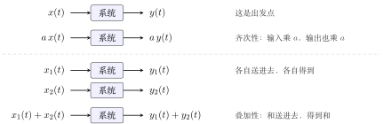
图 1 线性系统的两条规矩。注意每一行里的「系统」都是同一台机器。
两点要记住：
-
缺一不可：只有齐次性和叠加性同时满足才是线性（见本节末的思考题）。
-
「任意」是定义的灵魂：\(x(t)\)、\(x_1(t)\)、\(x_2(t)\)、\(a\) 都是任意的（记作 \(\forall\)）。后面所有难点，都出在没有真正理解这个「任意」。例如 \(y(t)=3x(t)\) 的意思是：这台机器对任意输入都乘 3。
离散线性系统的定义只需把圆括号 \((t)\) 换成方括号 \([n]\)：\(x[n]\to y[n]\)，\(a\,x[n]\to a\,y[n]\)，\(x_1[n]+x_2[n]\to y_1[n]+y_2[n]\)。
2.2 证明¶
重点
证一个系统是线性的：对所有输入、所有 \(a\) 都验证两条规矩，一条也不能漏。
证一个系统不是线性的：只要找到一个反例，让它不满足齐次性或叠加性之一，就够了。
原因就是定义里的「任意」：说「对任意都成立」要全部验完；说「不是对任意都成立」，有一个例外就够。
▸ 证线性：设中间变量，打成「一包」。 先看清这台机器的规矩：「送进去信号 \(f\)，出来 \(F[f]\)」（例如放大器：送进去 \(f\)，出来 \(3f\)）。因为 \(x(t)\) 是任意信号，所以 \(a\,x(t)\) 也只是又一个信号；设中间变量 \(f(t)=a\,x(t)\)，把它当成一包整体送进去，再做代换。步骤：
-
齐次性：令 \(f=a\,x(t)\)，算出 \(F[f]\)，化成 \(a\,y(t)\)；
-
叠加性：令 \(f=x_1(t)+x_2(t)\)，算出 \(F[f]\)，化成 \(y_1(t)+y_2(t)\)。
▸ 证非线性：对照「实际」和「希望」。 取最简单的输入（如 \(x\equiv0\) 或 \(x\equiv1\)，\(\equiv\) 表示恒等于）和 \(a=2\)：实际是把 \(a\,x\) 送进系统得到的输出；希望是「若齐次性成立，应得 \(a\,y\)」。两者不等，就矛盾，说明系统不是线性的。
2.3 例题：证明是线性¶
下面每题都按定义分齐次性、叠加性两步，写成证明。
例 1 放大器 \(y(t)=3x(t)\) 线性
系统：\(x(t)\to y(t)=3x(t)\)，即输入乘 \(3\)。
证明。
两式对任意输入、任意实数 \(a\) 均成立，故 \(y(t)=3x(t)\) 为线性系统。\(\blacksquare\)
例 2 \(y(t)=t\,x(t)\) 线性
系统：\(x(t)\to y(t)=t\,x(t)\)。\(t\) 是每个时刻的乘数，不随输入改变。
证明。
两式对任意输入、任意实数 \(a\) 均成立，故 \(y(t)=t\,x(t)\) 为线性系统。\(\blacksquare\)
注：\(t\) 随时间变化不影响线性——线性只问「放大或相加时，输出是否跟着放大或相加」，\(t\) 只是逐点的系数；它的影响体现在时不变性上（见下一节的 \(y(t)=t\,x(t)\)）。
例 3 微分器 \(y(t)=\dfrac{\mathrm{d}x(t)}{\mathrm{d}t}\) 线性
系统：\(x(t)\to y(t)=\dfrac{\mathrm{d}x(t)}{\mathrm{d}t}\)。
证明。用微分的线性：
故微分器为线性系统。\(\blacksquare\)
例 4 积分器 \(y(t)=\displaystyle\int_{-\infty}^{t}x(\tau)\,\mathrm{d}\tau\) 线性
系统：\(x(t)\to y(t)=\displaystyle\int_{-\infty}^{t}x(\tau)\,\mathrm{d}\tau\)。
证明。用积分的线性（常数可提出，和的积分等于积分的和）：
故积分器为线性系统。\(\blacksquare\)
例 5 离散的四个系统 线性
把前面几个系统改写成离散形式：
| 系统 | 在做什么 | 结论 |
|---|---|---|
| \(y[n]=2x[n]\) | 每个数乘 2 | 线性，证法同 \(3x(t)\) |
| \(y[n]=n\,x[n]\) | 第 \(n\) 个数乘 \(n\) | 线性，证法同 \(t\,x(t)\) |
| \(y[n]=x[n]-x[n-1]\) | 当前值减前一个值（差分） | 线性，下面完整证 |
| \(y[n]=\displaystyle\sum_{k=-\infty}^{n}x[k]\) | 从最早加到现在（累加） | 线性，留作练习 |
差分(difference)就是离散的微分器（离散信号没法求导，「后一个减前一个」就是近似的求导）；累加(accumulator)就是离散的积分器。
▸ 差分 \(y[n]=x[n]-x[n-1]\) 的证明。
-
齐次性：输入 \(a\,x[n]\)，输出 \(a\,x[n]-a\,x[n-1]=a\bigl(x[n]-x[n-1]\bigr)=a\,y[n]\)；
-
叠加性：输入 \(x_1[n]+x_2[n]\)，输出 \(\bigl(x_1[n]-x_1[n-1]\bigr)+\bigl(x_2[n]-x_2[n-1]\bigr)=y_1[n]+y_2[n]\)。
故差分为线性系统。\(\blacksquare\)
2.4 例题：证明不是线性¶
例 6 \(y(t)=x(t)+1\) 非线性
系统：\(x(t)\to y(t)=x(t)+1\)。
证明（举反例）。取 \(x(t)\equiv0\)、\(a=2\)：
-
输入 \(x(t)\equiv0\)，输出 \(y(t)=0+1=1\)；
-
输入 \(2x(t)\equiv0\)，与原输入是同一个信号，实际输出仍为 \(1\)；
-
若齐次性成立，应有 \(a\,y(t)=2\times1=2\)。
实际输出 \(1\neq\) 期望值 \(2\)，故齐次性不成立，\(y(t)=x(t)+1\) 为非线性系统。\(\blacksquare\)
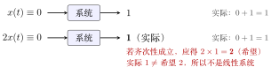
图 2 反例 \(y(t)=x(t)+1\)：输入是同一个全零信号，输出却被要求同时等于 \(1\) 和 \(2\)。
例 7 \(y(t)=x(t)^2\) 非线性
系统：\(x(t)\to y(t)=x(t)^2\)。
证明（举反例）。取 \(x(t)\equiv1\)、\(a=2\)：
实际输出 \(4\neq\) 期望值 \(2\)，故齐次性不成立，\(y(t)=x(t)^2\) 为非线性系统。\(\blacksquare\)
图 3 反例 \(y(t)=x(t)^2\)：输入翻一倍，输出翻了四倍。
可跳过
快速检查：全零输入必须得到全零输出。齐次性里 \(a\) 可取 \(0\)，所以线性系统对零输入一定给零输出；\(y(t)=x(t)+1\) 就栽在这里。反过来不成立：\(y(t)=x(t)^2\) 对零输入给零，却不是线性的。所以这个检查只能「判死刑」，不能「判线性」。
2.5 线性的快速判据：两句话¶
这个办法不能覆盖所有系统，但能覆盖 70%–80% 以上。
重点
线性系统的判据：
-
每一项都有 \(x\)；
-
每一项的 \(x\) 都是一次。
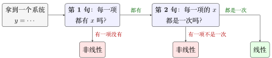
图 4 线性系统的两句话判断法。
| 系统 | 两句话检查 | 结论 |
|---|---|---|
| \(y(t)=3x(t)+2x(t-2)\) | 两项都有 \(x\)，都是一次 | 线性 |
| \(y[n]=n\,x[n-2]+3x[n+1]\) | 两项都有 \(x\)，都是一次（\(n\) 是系数，不是 \(x\)） | 线性 |
| \(y(t)=3x(t)+2\) | 第二项「\(2\)」没有 \(x\) | 非线性 |
| \(y[n]=e^{x[n]}\) | 看起来「有 \(x\)，也只出现一次」，但要展开看 | 非线性 |
▸ 为什么 \(e^{x[n]}\) 看起来像线性却不是。 \(e^{x}=1+x+\dfrac{x^2}{2!}+\cdots\)（泰勒展开，Taylor expansion），里面有常数项 \(1\)（没有 \(x\)）、有 \(x^2\)（不是一次），两句话都不满足，所以非线性。两句话要看展开以后每一项的样子，不是看表面写法。
可跳过
两句话的边界：\(x\) 被套在函数里，如 \(|x(t)|\)、\(\sin x(t)\)，和 \(e^{x}\) 是同一类陷阱；两个 \(x\) 相乘，如 \(x(t)\,x(t-1)\)，「一次」就不满足；真要严格证明，还是回到齐次 + 叠加。
2.6 与教材定义的等价¶
教材把两条合成一条（教材第 28 页，式 1-89、1-90）。两种定义完全等价，关键在「任意」。
| 内容 | |
|---|---|
| 分开写 | 两条分开写：齐次性 \(x(t)\to y(t)\Rightarrow a\,x(t)\to a\,y(t)\)；叠加性 \(x_1\to y_1,\ x_2\to y_2\Rightarrow x_1+x_2\to y_1+y_2\)。 |
| 合并写 | 一条合起来写：对任意 \(x_1\to y_1\)、\(x_2\to y_2\) 和任意实数 \(a,b\)，都有 \(a\,x_1(t)+b\,x_2(t)\to a\,y_1(t)+b\,y_2(t)\)。 |
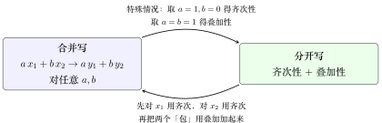
图 5 两个定义互相推得出对方，所以说它们等价。
▸ 合并写 \(\Rightarrow\) 分开写（简单）。 取 \(b=0\)（\(a\) 任意），\(x_1=x\)：\(a\,x+0\to a\,y+0\)，即齐次性 \(a\,x\to a\,y\)。取 \(a=b=1\)：直接得到叠加性。
▸ 分开写 \(\Rightarrow\) 合并写（稍难）。 已知（分开写的定义，对任意输入都成立）。为避免和后面的 \(a,b\) 混淆，齐次性里的倍数换用字母 \(c\)：
-
齐次性：若 \(x\to y\)，则对任意实数 \(c\)，有 \(c\,x\to c\,y\)；
-
叠加性：若 \(x_A\to y_A\)、\(x_B\to y_B\)，则 \(x_A+x_B\to y_A+y_B\)。
要证（合并写的定义）：任取 \(x_1\to y_1\)、\(x_2\to y_2\)，任取实数 \(a,b\)，都有
证明。分三步，只用 (H) 和 (S)，完全不去管系统「里面」具体是什么运算：
-
对 \(x_1\) 用 (H)，取 \(c=a\)。\(x_1\) 是任意输入，已知 \(x_1\to y_1\)，所以 (H) 对它成立：
\[ a\,x_1(t)\ \to\ a\,y_1(t). \] -
对 \(x_2\) 用 (H)，取 \(c=b\)。\(x_2\) 也是任意输入，已知 \(x_2\to y_2\)，\(b\) 是任意实数，所以
\[ b\,x_2(t)\ \to\ b\,y_2(t). \] -
把前两步的结果当作两个输入，用 (S)。令 \(u(t)=a\,x_1(t)\)，\(v(t)=b\,x_2(t)\)。它们各自只是一个信号（「一包」）；由第 1、2 步，\(u\to a\,y_1\)，\(v\to b\,y_2\)。(S) 对任意两个输入都成立，取 \(x_A=u\)、\(x_B=v\)，\(y_A=a\,y_1\)、\(y_B=b\,y_2\)，得
\[ u+v\ \to\ a\,y_1+b\,y_2,\qquad\text{即}\qquad a\,x_1(t)+b\,x_2(t)\ \to\ a\,y_1(t)+b\,y_2(t). \]
\(x_1,x_2,a,b\) 都是任取的，所以合并写的定义对任意输入、任意 \(a,b\) 成立。证毕。
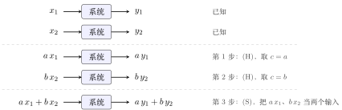
图 6 分开写 \(\Rightarrow\) 合并写：先用齐次性分别把 \(x_1\)、\(x_2\) 放大成 \(a\,x_1\)、\(b\,x_2\)，再用叠加性把两个放大后的信号加起来。每一行的「系统」仍是同一台机器。
▸ 几个容易卡住的地方
-
为什么能对 \(x_1\) 用 (H)：(H) 里的 \(x\) 是任意输入，\(x_1\) 就是其中一个；(H) 里的 \(c\) 是任意实数，取成 \(a\) 当然允许（\(a=0\) 或负数也行）。这就是「任意」的用法：把定义里的字母换成手头的具体信号和数。
-
第 1 步的输出 \(a\,y_1\) 是 (H) 保证的，不是我们自己去算 \(a\,x_1\) 经过系统得到的；我们根本不知道系统内部怎么算，只知道 (H)。
-
第 3 步为什么不是「直接相加」：\(a\,x_1\) 和 \(b\,x_2\) 的输出 \(a\,y_1\)、\(b\,y_2\) 是第 1、2 步得到的结论；要把「两个输入的和」对应到「两个输出的和」，靠的是 (S)，不能省。(S) 只管「两个输入相加」，所以要先用 (H) 把 \(a,b\) 吸收进信号里，凑成 (S) 的形状。
若觉得绕、烧脑，核心是没有理解「任意」。日常用哪个都行：分开写更适合入门证明，合并写更适合推别的结论。
2.7 思考题：缺一不可¶
重点
-
请举一个系统，满足齐次性，不满足叠加性；
-
请再举一个系统，满足叠加性，不满足齐次性。
两道里有一道特别难（提示：\(a\) 可取负数）。
可跳过
第 1 道：\(y(t)=\dfrac{x(t)^2}{x(t-1)}\)（分母为 \(0\) 时约定输出 \(0\)）满足齐次性：\(\dfrac{a^2x(t)^2}{a\,x(t-1)}=a\cdot\dfrac{x(t)^2}{x(t-1)}\)；但取某一时刻 \((x_1(t),x_1(t-1))=(1,1)\)、\((x_2(t),x_2(t-1))=(1,2)\)，则 \(y_1=1\)、\(y_2=\tfrac12\)，而和的输出是 \(\tfrac{2^2}{3}=\tfrac43\neq\tfrac32\)，叠加性不成立。第 2 道很难：\(a\) 取任意实数时，叠加性已能推出整数、分数的齐次性，反例只能靠「病态」函数（柯西函数方程的非线性解，需借助选择公理）。
3 时不变系统¶
3.1 概念¶
重点
假设对任意输入 \(x(t)\)，系统给出输出 \(y(t)\)。如果对任意实数 \(t_0\)，都有
那么它是时不变系统(time-invariant system)；否则是时变系统(time-varying system)。
直观理解：输入晚到 \(t_0\) 秒，输出也恰好晚 \(t_0\) 秒，形状一点不变。
\(x(t-t_0)\) 就是把 \(x\) 右移 \(t_0\) 个单位（\(t_0\) 为负则左移）。
时不变：同样的输入无论何时送入，输出都一样；若输出随送入时刻改变，就是时变。系统的输出不随输入送入的时刻而改变。
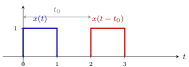
图 7 时不变：输入整体右移 \(t_0\)，输出也只是同样右移 \(t_0\)，形状不变，即 \(x(t-t_0)\to y(t-t_0)\)。
3.2 证明¶
重点
证时不变：必须严格按定义证。设中间变量 \(f(t)=x(t-t_0)\)，代进系统的规矩，得到「实际」输出；再把 \(y(t)\) 里所有的 \(t\) 换成 \(t-t_0\)，得到「希望」输出。两边相等就是时不变。
证时变：举一个反例，列出「实际」和「希望」，二者不等即可。
3.3 做题步骤：固定写两行¶
固定写两行，按部就班不容易代错。
-
先用口诀预判：\(x\) 括号外有没有随 \(t\) 变的项？括号里是不是只有 \(t\) 加减常数？两条都过，多半时不变；有一条不过，多半时变。带积分或求和的系统口诀不灵，直接走下面几步（积分要换元，例子见例 5）。
-
写出系统规矩：用中间变量 \(f\) 表示「送进来的任意信号」，把系统写成 \(f(t)\to\cdots\)。例：\(x(2t)\) 写成 \(f(t)\to f(2t)\)；\(t\,x(t)\) 写成 \(f(t)\to t\,f(t)\)。
-
第一行，写「实际」（先移输入，再过系统）：令 \(f(t)=x(t-t_0)\)，先写出它的入口规则 \(f(\square)=x(\square-t_0)\)，再把系统规矩里要的东西填进 \(\square\)。系统自带的东西（\(2t\) 里的 \(2\)、\(\cos t\)、单独的 \(t\)）原样保留，不跟着 \(t_0\) 动。
-
第二行，写「期望」（先过系统，再移输出）：先写出 \(y(\square)\) 的规则，再把 \(\square\) 换成 \(t-t_0\)：\(y(t)\) 里所有的 \(t\) 一起换。
-
比较两行。对任意 \(t_0\) 都相等，是时不变，\(\blacksquare\)；不等，是时变。证时变时再取一个具体的 \(x\)（矩形脉冲、阶跃、单位脉冲）和一个具体的 \(t_0\)（如 \(1\)），算出两个不同的结果，\(\blacksquare\)。
时变的两种来源（看到哪一种，就知道「实际」和「期望」会在哪里分家）：
| 类型 | 例子 | 为什么「实际」\(\neq\)「期望」 |
|---|---|---|
| 对 \(t\) 缩放或反转 | \(x(2t)\)、\(x(-t)\)、\(x[3-n]\) | 「实际」里输入的平移被系统打折（\(x(2t)\)：\(t_0\) 变成 \(t_0/2\)）或反向；「期望」是原样平移 |
| 括号外挂着随 \(t\) 变的项（乘或加都算） | \(t\,x(t)\)、\(x(t)\cos t\)、\(x(t)+\cos t\) | 这一项是系统自带的，钉在时间轴上：输入挪了它不动；而「期望」是整个输出一起平移，它跟着挪 |
三个最容易犯的错：
-
把 \(y(t-t_0)\) 当成「延时输入之后的输出」。它是先过系统再延时，是「期望」；
-
算「实际」时把系统里的 \(2\) 也乘到 \(t_0\) 上，写成 \(x\bigl(2(t-t_0)\bigr)\)；
-
以为 \(\cos t\)、\(t\) 这类系统自带的项会跟着输入一起延时。
3.4 例题：证明时不变¶
例 1 \(y(t)=x(t-1)\) 时不变
系统：\(x(t)\to y(t)=x(t-1)\)，即输入右移 \(1\) 个单位。
证明。任取 \(t_0\)。
-
实际：输入 \(f(t)=x(t-t_0)\)，输出 \(f(t-1)=x\bigl((t-1)-t_0\bigr)=x(t-1-t_0)\)；
-
期望：\(y(t-t_0)=x\bigl((t-t_0)-1\bigr)=x(t-1-t_0)\)。
实际 \(=\) 期望，对任意 \(t_0\) 成立，故 \(y(t)=x(t-1)\) 为时不变系统。\(\blacksquare\)
例 2 \(y(t)=e^{x(t+1)}\) 时不变
系统：\(f(t)\to e^{f(t+1)}\)。
证明。任取 \(t_0\)。
-
实际：输入 \(f(t)=x(t-t_0)\)，输出 \(e^{f(t+1)}=e^{x(t+1-t_0)}\)；
-
期望：\(y(t-t_0)=e^{x((t-t_0)+1)}=e^{x(t+1-t_0)}\)。
实际 \(=\) 期望，对任意 \(t_0\) 成立，故 \(y(t)=e^{x(t+1)}\) 为时不变系统。\(\blacksquare\)
例 3 微分器 \(y(t)=\dfrac{\mathrm{d}x(t)}{\mathrm{d}t}\) 时不变
系统：\(f(t)\to\dfrac{\mathrm{d}f(t)}{\mathrm{d}t}\)。\(x'\) 表示 \(x\) 的导函数。
证明。任取 \(t_0\)。
-
实际：输入 \(f(t)=x(t-t_0)\)，输出 \(\dfrac{\mathrm{d}}{\mathrm{d}t}\,x(t-t_0)=x'(t-t_0)\)（括号里的 \(t-t_0\) 对 \(t\) 的导数是 \(1\)，不会多出系数）；
-
期望：\(y(t)=x'(t)\)，故 \(y(t-t_0)=x'(t-t_0)\)。
实际 \(=\) 期望，对任意 \(t_0\) 成立，故微分器为时不变系统。\(\blacksquare\)
数字看一眼：取 \(x(t)=t^2\)，\(t_0=1\)。输入 \((t-1)^2\) 的导数是 \(2(t-1)\)，\(y(t-1)=2(t-1)\)，两边一样。直觉：曲线整体右移，每一点附近的变化率也跟着右移，形状不变。
例 4 差分 \(y[n]=x[n]-x[n-1]\) 时不变
系统：\(f[n]\to f[n]-f[n-1]\)（当前值减前一个值）。离散信号的时不变，是对任意整数 \(n_0\)：输入 \(x[n-n_0]\) 时，输出 \(y[n-n_0]\)。
证明。任取整数 \(n_0\)。
-
实际：输入 \(f[n]=x[n-n_0]\)，则 \(f[n-1]=x\bigl[(n-1)-n_0\bigr]\)，输出 \(f[n]-f[n-1]=x[n-n_0]-x[n-1-n_0]\)；
-
期望：\(y[n]=x[n]-x[n-1]\)，故 \(y[n-n_0]=x[n-n_0]-x\bigl[(n-n_0)-1\bigr]=x[n-n_0]-x[n-1-n_0]\)。
实际 \(=\) 期望，对任意整数 \(n_0\) 成立，故差分为时不变系统。\(\blacksquare\)
数字看一眼：输入单位脉冲 \(\delta[n]\)，输出 \(\delta[n]-\delta[n-1]\)（\(n=0\) 处为 \(1\)，\(n=1\) 处为 \(-1\)）。输入右移 \(2\) 变成 \(\delta[n-2]\)，输出 \(\delta[n-2]-\delta[n-3]\)（\(n=2\) 处为 \(1\)，\(n=3\) 处为 \(-1\)），正好是原输出右移 \(2\)。口诀也直接过：\(n\) 只在括号里，只是 \(n\) 和 \(n-1\)。
例 5 积分器 \(y(t)=\displaystyle\int_{-\infty}^{t}x(\tau)\,\mathrm{d}\tau\) 时不变
系统：\(f(t)\to\displaystyle\int_{-\infty}^{t}f(\tau)\,\mathrm{d}\tau\)。\(t\) 在积分上限，口诀按字面会判成时变，所以必须回到定义。
证明。任取 \(t_0\)。
-
实际：输入 \(f(\tau)=x(\tau-t_0)\)，输出 \(\displaystyle\int_{-\infty}^{t}x(\tau-t_0)\,\mathrm{d}\tau\)。令 \(s=\tau-t_0\)（理由见下文），则 \(\mathrm{d}\tau=\mathrm{d}s\)；\(\tau=-\infty\) 时 \(s=-\infty\)，\(\tau=t\) 时 \(s=t-t_0\)。于是输出 \(=\displaystyle\int_{-\infty}^{t-t_0}x(s)\,\mathrm{d}s\)；
-
期望：\(y(t)=\displaystyle\int_{-\infty}^{t}x(\tau)\,\mathrm{d}\tau\)，把所有 \(t\) 换成 \(t-t_0\)，\(y(t-t_0)=\displaystyle\int_{-\infty}^{t-t_0}x(\tau)\,\mathrm{d}\tau\)。积分变量只是计数的名字（哑变量，dummy variable），写成 \(\tau\) 还是 \(s\) 结果一样，故 \(=\displaystyle\int_{-\infty}^{t-t_0}x(s)\,\mathrm{d}s\)。
实际 \(=\) 期望，对任意 \(t_0\) 成立，故积分器为时不变系统。\(\blacksquare\)
数字看一眼：取 \(x\) 为 \([0,1]\) 上等于 \(1\) 的矩形，\(t_0=1\)。原输出：\(t\lt{}0\) 为 \(0\)，\(0\le t\le1\) 为 \(t\)（斜坡），\(t\gt{}1\) 停在 \(1\)。输入右移 \(1\) 变成 \([1,2]\) 上的矩形，实际输出：\(t\lt{}1\) 为 \(0\)，\(1\le t\le2\) 为 \(t-1\)，\(t\gt{}2\) 停在 \(1\)，正好是原输出右移 \(1\)。
可跳过
为什么要令 \(s=\tau-t_0\)。
-
目的：「实际」那行里被积的是挪过的 \(x(\tau-t_0)\)，而 \(y\) 的定义只会算「\(x\) 本人」的积分，两边长得不一样，没法比。把 \(\tau-t_0\) 整个起个新名字 \(s\)，被积函数还原成 \(x(s)\)，才能和「期望」对上。
-
代价：积分范围也要用新名字重算：上限 \(t\) 变成 \(t-t_0\)，下限 \(-\infty\) 不变；\(\mathrm{d}\tau\) 变成 \(\mathrm{d}s\)（\(t_0\) 是常数）。
-
效果：平移从被积函数里「搬」到了积分上限里。直觉：曲线右移 \(t_0\) 再累计到 \(t\)，等于曲线不动，只累计到 \(t-t_0\)。
例 6 累加器 \(y[n]=\displaystyle\sum_{k=-\infty}^{n}x[k]\) 时不变
系统：\(f[n]\to\displaystyle\sum_{k=-\infty}^{n}f[k]\)。它是离散的积分器，\(n\) 同样在求和上限，口诀不适用。证法和积分器一样，只是把积分换成求和、\(\tau\) 换成 \(k\)。
证明。任取整数 \(n_0\)。
-
实际：输入 \(f[k]=x[k-n_0]\)，输出 \(\displaystyle\sum_{k=-\infty}^{n}x[k-n_0]\)。令 \(m=k-n_0\)：\(k=-\infty\) 时 \(m=-\infty\)，\(k=n\) 时 \(m=n-n_0\)。于是输出 \(=\displaystyle\sum_{m=-\infty}^{n-n_0}x[m]\)；
-
期望：\(y[n-n_0]=\displaystyle\sum_{k=-\infty}^{n-n_0}x[k]=\sum_{m=-\infty}^{n-n_0}x[m]\)（求和下标 \(k\)、\(m\) 只是计数的名字，叫什么都一样）。
实际 \(=\) 期望，对任意整数 \(n_0\) 成立，故累加器为时不变系统。\(\blacksquare\)
数字看一眼：输入 \(\delta[n]\)，输出从 \(n=0\) 起全为 \(1\)（\(n\lt{}0\) 为 \(0\)）。输入右移 \(2\) 变成 \(\delta[n-2]\)，输出从 \(n=2\) 起全为 \(1\)，正好是原输出右移 \(2\)。
微分器、积分器、差分、累加器这四个都是时不变。它们的规则只看「相对位置」（和前一刻比，或从最早累积到现在），不看「几点钟」；输入整体挪了，「现在」跟着挪，输出也就只是整体跟着挪。
3.5 例题：证明时变（反例）¶
例 7 \(y(t)=x(2t)\) 时变
系统：\(x(t)\to y(t)=x(2t)\)，即波形沿时间轴压缩 \(2\) 倍。
证明（举反例）。取 \(x(t)=1\)（\(0\le t\le1\)），其余为 \(0\)；取 \(t_0=1\)。
-
实际：输入 \(x(t-1)\) 在 \(1\le t\le2\) 上为 \(1\)，经系统压缩后在 \(0.5\le t\le1\) 上为 \(1\)；
-
期望：若时不变，输出应为 \(y(t-1)\)，即 \(y(t)\) 右移 \(1\)，在 \(1\le t\le1.5\) 上为 \(1\)。
实际 \(\neq\) 期望，故 \(y(t)=x(2t)\) 为时变系统。\(\blacksquare\)
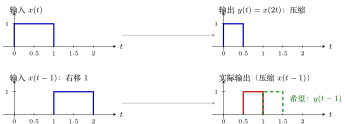
图 8 \(y(t)=x(2t)\) 的反例：第二行红色（实际）和绿色虚线（希望）不在同一位置，所以是时变系统。
可跳过
为什么「实际」是 \(x(2t-t_0)\)，而不是 \(x\bigl(2(t-t_0)\bigr)\)。这是最容易绕晕的一步，关键是看清入口 \(\square\) 里填的是什么。把函数当成一台机器，括号里的 \(\square\) 是入口：
-
\(y\) 这台机器（\(y(t)=x(2t)\)）：进去一个数，先乘 \(2\)，再交给 \(x\)，即 \(y(\square)=x(2\square)\)；
-
\(f\) 这台机器（\(f(t)=x(t-t_0)\)）：进去一个数，先减 \(t_0\)，再交给 \(x\)，即 \(f(\square)=x(\square-t_0)\)。
| 路线 | 把什么填进哪台机器 | 结果 |
|---|---|---|
| 实际：先移输入，再过系统 | 系统规矩 \(f(t)\to f(2t)\)：把 \(2t\) 填进 \(f\)（先减 \(t_0\)） | \(x(2t-t_0)\) |
| 期望：先过系统，再移输出 | 把 \(t-t_0\) 填进 \(y\)（先乘 \(2\)） | \(x\bigl(2(t-t_0)\bigr)=x(2t-2t_0)\) |
两条路里「乘 \(2\)」和「减 \(t_0\)」的先后次序相反，所以结果不同。注意：\(y(t-t_0)\) 是「先过系统，再延时输出」，那是期望，不是延时输入之后的输出。
代数字看：取 \(t_0=1\)、看 \(t=3\) 这一刻，实际取 \(x(2\cdot3-1)=x(5)\)，期望取 \(x(2\cdot3-2)=x(4)\)，两边读的是 \(x\) 在不同位置的值。用上面的矩形（\(0\le t\le1\) 为 \(1\)）：实际 \(x(2t-1)\) 在 \(0.5\le t\le1\) 为 \(1\)，期望 \(x(2t-2)\) 在 \(1\le t\le1.5\) 为 \(1\)，正是图里的红色和绿色虚线。
换个写法：\(x(2t-t_0)=x\bigl(2(t-\tfrac{t_0}{2})\bigr)\)。输入右移了 \(t_0\)，输出却只右移 \(\tfrac{t_0}{2}\)（延迟被压缩打了对折）；时不变要求输出也右移 \(t_0\)，对不上。推广：\(x(at)\) 的输入右移 \(t_0\)，输出只右移 \(t_0/a\)，只要 \(a\neq1\) 就是时变。
例 8 \(y(t)=t\,x(t)\) 时变
系统：\(x(t)\to y(t)=t\,x(t)\)。
证明（举反例）。取 \(x(t)=u(t)\)（单位阶跃：\(t\gt{}0\) 为 \(1\)，\(t\lt{}0\) 为 \(0\)），\(t_0=1\)。
-
实际：输入 \(u(t-1)\)，输出 \(t\,u(t-1)\)：\(t\lt{}1\) 时为 \(0\)，\(t\ge1\) 时等于 \(t\)；
-
期望：\(y(t-1)=(t-1)\,u(t-1)\)：\(t\lt{}1\) 时为 \(0\)，\(t\ge1\) 时等于 \(t-1\)。
\(t\ge1\) 时两者相差 \(1\)（如 \(t=1\)：实际为 \(1\)，期望为 \(0\)），故 \(y(t)=t\,x(t)\) 为时变系统。\(\blacksquare\)
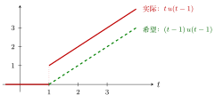
图 9 \(y(t)=t\,x(t)\) 的反例，输入 \(u(t-1)\)：实际输出（红）在 \(t=1\) 处直接跳到 \(1\)，而希望的输出（绿虚线）是从 \(0\) 开始爬。两条线上下错开了整整 \(1\)。
例 9 \(y[n]=x[3-n]\) 时变
系统：\(x[n]\to y[n]=x[3-n]\)。\(n\) 前的负号把平移变成了反向平移。
证明（举反例）。取 \(x[n]=\delta[n]\)（单位脉冲：只在 \(n=0\) 处为 \(1\)）。
-
输入 \(\delta[n]\)，输出 \(y[n]=\delta[3-n]\)，脉冲在 \(n=3\)；
-
输入 \(\delta[n-1]\)（右移 \(1\)），实际输出 \(y[n]=\delta[(3-n)-1]=\delta[2-n]\)，脉冲在 \(n=2\)；
-
期望：若时不变，输出应是第 1 步结果的右移 \(1\)，脉冲在 \(n=4\)。
实际（\(n=2\)）\(\neq\) 期望（\(n=4\)），故 \(y[n]=x[3-n]\) 为时变系统。\(\blacksquare\)
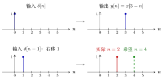
图 10 \(y[n]=x[3-n]\) 的反例：输入右移 1，实际输出的脉冲不是右移到 \(4\)，而是左移到 \(2\)。
例 10 \(y(t)=x(t)+\cos t\) 时变
系统：\(f(t)\to f(t)+\cos t\)。式子里的 \(\cos t\) 是系统自带的，不是输入的一部分：输入右移，它不动；把整个输出右移，它才跟着一起动。
证明。任取 \(t_0\)。
-
实际：输入 \(f(t)=x(t-t_0)\)，输出 \(f(t)+\cos t=x(t-t_0)+\cos t\)；
-
期望：\(y(t-t_0)=x(t-t_0)+\cos(t-t_0)\)。
两者相差 \(\cos t-\cos(t-t_0)\)。取 \(x(t)\equiv0\)、\(t_0=\dfrac{\pi}{2}\)、\(t=0\)：实际 \(=\cos0=1\)，期望 \(=\cos\bigl(-\dfrac{\pi}{2}\bigr)=0\)，不等，故 \(y(t)=x(t)+\cos t\) 为时变系统。\(\blacksquare\)
对照：\(y(t)=x(t)+5\) 加的是常数，实际 \(x(t-t_0)+5=\) 期望 \(x(t-t_0)+5\)，是时不变。
3.6 时不变的快速判据：两句话¶
这个办法能覆盖 80% 以上的常见系统。
重点
时不变系统的判据：
-
\(t\) 只在 \(x\) 的括号里（括号外面不能再有 \(t\)）；
-
\(t\) 只能是 \(t\)，不能是 \(2t\)、\(-2t\)、\(t^2\) 等其他函数。
离散的时候把 \(t\) 换成 \(n\)。
| 系统 | 两句话检查 | 结论 |
|---|---|---|
| \(y(t)=x(t-1)\) | \(t\) 只在括号里，括号里就是 \(t\)（平移了 1） | 时不变 |
| \(y(t)=e^{x(t)}\) | \(t\) 只在括号里，括号里是 \(t\) | 时不变 |
| \(y(t)=x(2t)\) | 括号里是 \(2t\)，不只是 \(t\) | 时变 |
| \(y(t)=t\,x(t)\) | 有一个 \(t\) 跑到了 \(x\) 的括号外面 | 时变 |
| \(y[n]=x[3-n]\) | 括号里是 \(3-n\)，\(n\) 前面有负号 | 时变 |
可跳过
一处要留意：第 2 句应读成「括号里是 \(t\) 加减一个常数（只平移）」；乘系数（\(2t\)）、取反（\(-t\)、\(3-n\)）、平方（\(t^2\)）才算「其他函数」。
可跳过
口诀的两处提醒。
-
第 1 条的「括号外不能有 \(t\)」，乘和加都算：\(t\,x(t)\)、\(x(t)\cos t\)、\(x(t)+\cos t\) 都是时变。括号外是常数不算：\(3x(t)\)、\(x(t)+5\) 仍是时不变。
-
口诀只是筛查，不是定义；带积分的系统要回到定义。例如积分器 \(y(t)=\displaystyle\int_{-\infty}^{t}x(\tau)\,\mathrm{d}\tau\)：\(t\) 在积分上限，跑到了 \(x\) 的括号外面，口诀按字面会判成时变，但它其实是时不变（证明见例 5），离散的累加器同理（例 6）。
3.7 练习：五道¶
先盖住结论自己判，再对答案。每题先用口诀预判，再按「做题步骤」写两行；证时变要取具体的 \(x\) 和 \(t_0\)。
▸ 练习 1\(y(t)=x(t-1)+2\)：时不变
-
实际：\(f(t)=x(t-t_0)\)，输出 \(f(t-1)+2=x(t-1-t_0)+2\)；
-
期望：\(y(t-t_0)=x\bigl((t-t_0)-1\bigr)+2=x(t-1-t_0)+2\)。
相等，时不变。\(+2\) 是常数，不随 \(t\) 变，不影响。
▸ 练习 2\(y(t)=x(2t)+3\)：时变
-
实际：输出 \(f(2t)+3=x(2t-t_0)+3\)；
-
期望：\(y(t-t_0)=x\bigl(2(t-t_0)\bigr)+3=x(2t-2t_0)+3\)。
取例 7 的矩形（\(0\le t\le1\) 为 \(1\)）和 \(t_0=1\)：实际在 \(0.5\le t\le1\) 上比 \(3\) 高 \(1\)，期望在 \(1\le t\le1.5\) 上比 \(3\) 高 \(1\)，位置不同。\(+3\) 无害，问题出在 \(2t\)。
▸ 练习 3\(y(t)=x(t)\cos 2t\)：时变
-
实际：\(x(t-t_0)\cos2t\)（系统自带的 \(\cos2t\) 不动）；
-
期望：\(x(t-t_0)\cos\bigl(2(t-t_0)\bigr)\)。
取 \(x(t)\equiv1\)、\(t_0=\dfrac{\pi}{4}\)、\(t=0\)：实际 \(=\cos0=1\)，期望 \(=\cos\bigl(-\dfrac{\pi}{2}\bigr)=0\)，不等。\(t_0\) 不能乱取：\(\cos2t\) 的周期是 \(\pi\)，取 \(t_0=\pi\) 时两行恰好相等。时不变要求对任意 \(t_0\) 成立，所以证时变时要挑一个不相等的 \(t_0\)。
▸ 练习 4\(y(t)=x(t+1)\,x(t-1)\)：时不变（易错：非线性不等于时变）
-
实际：输出 \(f(t+1)f(t-1)=x(t+1-t_0)\,x(t-1-t_0)\)；
-
期望：\(y(t-t_0)=x\bigl((t-t_0)+1\bigr)\,x\bigl((t-t_0)-1\bigr)=x(t+1-t_0)\,x(t-1-t_0)\)。
相等，时不变。数字看一眼：取 \(x\) 为 \([0,3]\) 上等于 \(1\) 的矩形，\(t_0=1\)。原输出在 \([1,2]\) 为 \(1\)；输入右移 \(1\) 后，实际输出在 \([2,3]\) 为 \(1\)，正是原输出右移 \(1\)。
两个 \(x\) 相乘是非线性，但时不变只看「括号外有没有随 \(t\) 变的项、括号里是不是只有 \(t\) 加减常数」，和线性无关。两个括号里的数不一样（\(t+1\)、\(t-1\)）只说明系统有记忆，是另一对性质。
▸ 练习 5\(y(t)=x(t)\,x(-t)\)：时变
-
实际：输出 \(f(t)f(-t)=x(t-t_0)\,x(-t-t_0)\)；
-
期望：\(y(t-t_0)=x(t-t_0)\,x\bigl(-(t-t_0)\bigr)=x(t-t_0)\,x(t_0-t)\)。
取 \(x\) 为 \([-1,1]\) 上等于 \(1\) 的矩形，\(t_0=1\)：原输出在 \([-1,1]\) 为 \(1\)，期望是它右移 \(1\)，在 \([0,2]\) 为 \(1\)。实际：输入右移后在 \([0,2]\)，\(f(-t)\) 在 \([-2,0]\)，两段只在 \(t=0\) 一点相遇，输出除这一点外全为 \(0\)。原因是 \(x(-t)\) 把方向反了：输入向右挪，这一项在输出里向左挪，和例 9 的 \(x[3-n]\) 同一类。
4 因果系统¶
4.1 概念¶
重点
因果系统(causal system)：任何时刻的输出，只取决于现在和过去的输入，不取决于未来的输入（教材 P29 的定义）。
形象地说，输出 \(y(t)\) 在输入 \(x(t)\) 之后发生：输入 \(x\) 从 \(t_0\) 才开始有值，输出 \(y\) 从 \(t_1\) 才开始有值，则系统是因果的，当且仅当 \(t_1\ge t_0\)。若 \(t_1\lt{}t_0\)，输入还没来，输出就「未卜先知」地出来了，是非因果系统(non-causal system)。
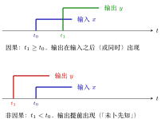
图 11 因果与非因果：比较两个「起点」\(t_0\)（输入从这里开始）和 \(t_1\)（输出从这里开始）。
说明
-
教材定义（P29）为准：「输出在输入之后」只是形象说法。
-
现实系统不具备预知能力，所以非因果系统物理上难以实现。
4.2 证明：判据¶
重点
因果的判据：\(x\) 括号里的数，恒不大于 \(y\) 括号里的数。
只要有任何一个时刻，\(x\) 括号里的数比 \(y\) 的更大，就是非因果。
4.3 例题¶
| 系统 | \(x\) 括号里 vs \(y\) 括号里（\(t\) 或 \(n\)） | 结论 |
|---|---|---|
| \(y(t)=x(t-1)\) | \(t-1\lt{}t\)，恒成立 | 因果 |
| \(y(t)=x(t+1)\) | \(t+1\gt{}t\)，输出比输入早一个单位 | 非因果 |
| \(y(t)=x(2t)\) | \(t\gt{}0\) 时 \(2t\gt{}t\)。反例：输入从 \(t=1\) 开始，压缩 2 倍后输出从 \(t=\tfrac12\) 开始，提前 | 非因果 |
| \(y(t)=x(\tfrac12 t)\) | \(t\lt{}0\) 时 \(\tfrac12t\gt{}t\)（如 \(t=-2\)，\(\tfrac12t=-1\gt{}-2\)）。反例：输入从 \(t=-1\) 开始，拉伸 2 倍后输出从 \(t=-2\) 开始，早 | 非因果 |
| \(y[n]=x[3-n]\) | \(3-n\) 和 \(n\) 没有恒定的大小关系 | 非因果 |
\(x(\tfrac12t)\) 这一题要换到 \(t\lt{}0\)：取 \(t\gt{}0\) 时 \(\tfrac12t\lt{}t\)，用到的是过去的输入，看不出问题；但只要有一处时刻用到未来，就是非因果。
5 记忆与无记忆系统¶
5.1 概念¶
重点
无记忆系统(memoryless system)：\(y(t)\) 的值仅仅依赖于 \(x(t)\) 的值（同一时刻的输入）。离散时把圆括号换成方括号。反面是记忆系统(system with memory)。
直观理解：无记忆像计算器，按下哪个数立刻出结果，只看这一次按键；记忆像银行余额，取决于过去所有的存取记录。
图 12 无记忆：\(y(t)\) 只由同一时刻的 \(x(t)\) 决定；有记忆：还要用到其它时刻的输入。
5.2 证明：判据¶
重点
无记忆的判据：\(x\) 和 \(y\) 括号里的数完全一样。（因果是「不大于」，无记忆是「相等」。）
5.3 例题¶
| 系统 | 结论 | 理由 |
|---|---|---|
| \(y(t)=x(t)^2+e^{x(t)}\) | 无记忆 | \(y(t)\) 只依赖 \(x(t)\) |
| \(y(t)=x(t-1)\) | 记忆 | \(y(t)\) 依赖 \(t-1\) 时刻的值 |
| \(y[n]=x[n]^3\) | 无记忆 | 只依赖同一个 \(n\) 的值 |
| \(y[n]=x[2n]\) | 记忆 | \(n\) 点的输出依赖 \(x\) 在 \(2n\) 点的值 |
▸ 无记忆系统一定是因果系统吗？ 对。因果判据是「\(x\) 括号里的数恒小于或等于 \(y\) 括号里的数」，无记忆两个括号里的数恰好相等，落在「等于」这一种情况里，所以一定因果；反过来不成立：\(y(t)=x(t-1)\) 因果但有记忆。
6 可逆系统¶
6.1 概念¶
重点
可逆系统(invertible system)：\(x(t)\) 能唯一地写成 \(y(t)\) 的形式。三种等价的说法：
-
从输出可以唯一地倒推出输入；
-
\(y(t)\) 和 \(x(t)\) 是一一对应的映射；
-
\(y=f(x)\) 有反函数。
这与「什么函数有反函数」同理。
图 13 可逆：存在逆系统把输出唯一地还原成输入；两个不同输入给出同一输出时不可逆。
6.2 证明：判据¶
能把 \(x\) 用 \(y\) 写出来（写得出逆），就可逆；若有两个不同的输入给出同一个输出（或倒推时出现多个解），就不可逆。
6.3 例题¶
| 系统 | 结论 | 理由 |
|---|---|---|
| \(y(t)=x(t-1)\) | 可逆 | \(x(t)=y(t+1)\) |
| \(y(t)=x(t)^2\) | 不可逆 | \(x(t)=\pm\sqrt{y(t)}\)，一个 \(y\) 对应两个不同的 \(x\) |
| \(y(t)=x(2t)\) | 可逆 | \(x(t)=y(\tfrac12t)\) |
| 累加器 \(y[n]=\displaystyle\sum_{k=-\infty}^{n}x[k]\) | 可逆 | \(x[n]=y[n]-y[n-1]\)（相邻两个累加一减，刚好剩下 \(x[n]\)） |
| 积分器 \(y(t)=\displaystyle\int_{-\infty}^{t}x(\tau)\,\mathrm{d}\tau\) | 可逆 | \(x(t)=\dfrac{\mathrm{d}y(t)}{\mathrm{d}t}\) |
| 微分器 \(y(t)=\dfrac{\mathrm{d}x(t)}{\mathrm{d}t}\) | 不可逆 | \(x(t)=\displaystyle\int_{-\infty}^{t}y(\tau)\,\mathrm{d}\tau+C\)，常数 \(C\) 可取任意值，倒推不唯一 |
累加器的逆：把 \(y[n]\) 与 \(y[n-1]\) 相减，只剩 \(x[n]\)。结论：积分器、累加器可逆，微分器不可逆。
微分器为什么不可逆：求导会把常数丢掉。\(x(t)=5\) 和 \(x(t)=7\) 求导后都是 \(0\)，倒推时说不清原来是 \(5\) 还是 \(7\)，这就是「\(+C\)」的来源。积分器每一刻都在累积，信息没有丢，所以可以求导还原。
7 稳定系统¶
7.1 概念：有界进，有界出¶
设 \(x(t)\to y(t)\)。若 \(x(t)\) 有界就能推出 \(y(t)\) 有界，即「输入有界对应着输出有界」，就是稳定系统(stable system)；若有界的输入能对应出无界的输出，就是不稳定系统。（英文教材常称 BIBO 稳定，bounded-input bounded-output。）
重点
有界(bounded)的定义：
画出来：\(x(t)\) 始终被「上面 \(+M\)、下面 \(-M\)」两条线夹住，不可能飞到 \(\pm\infty\)。
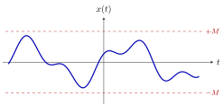
图 14 有界信号：不管 \(t\) 取多大多小，波形始终待在两条红色虚线之间。
7.2 证明¶
重点
证稳定：设 \(|x(t)|\lt{}M\)，推出 \(|y(t)|\) 被某个固定的数夹住。这个数可以很大，只要固定就行。
证不稳定：举一个有界的输入，让输出变成无界。
7.3 例题：稳定¶
例 1 \(y(t)=e^{x(t)}\) 稳定
系统：\(x(t)\to y(t)=e^{x(t)}\)。
证明。设输入有界：\(|x(t)|\lt{}M\)。则
其中第一处不等号用到 \(x(t)\le|x(t)|\) 及 \(e^{u}\) 单调递增。\(e^{M}\) 是与 \(t\) 无关的固定上界，故 \(y(t)\) 有界，系统稳定。\(\blacksquare\)
例 2 \(y(t)=x(t)^3-2x(t)^2+x(t)+1\) 稳定
系统：\(x(t)\to y(t)=x(t)^3-2x(t)^2+x(t)+1\)。
证明。设 \(|x(t)|\lt{}M\)。由三角不等式 \(|a+b+c+d|\le|a|+|b|+|c|+|d|\)（并注意 \(|-2x^2|=2|x|^2\)），
\(M^3+2M^2+M+1\) 是固定上界，故 \(y(t)\) 有界，系统稳定。\(\blacksquare\)
多项式型系统都可用同一办法：把每一项的 \(|x|\) 换成 \(M\)，得到的数只要固定，系统就稳定——与表达式看起来多「大」无关。
7.4 例题：不稳定¶
| 系统 | 结论 | 反例 |
|---|---|---|
| 微分器 \(y(t)=\dfrac{\mathrm{d}x(t)}{\mathrm{d}t}\) |
不稳定 | 取 \(x(t)=u(t)\)（阶跃，被 \(1\) 夹住）。它在 \(t=0\) 处一下子升 \(1\)，求导得冲激 \(\delta(t)\)，在 \(t=0\) 变成无穷大，夹不住 |
| 积分器 \(y(t)=\displaystyle\int_{-\infty}^{t}x(\tau)\,\mathrm{d}\tau\) |
不稳定 | 取 \(x(t)\equiv1\)（被 \(M=1\) 夹住）。从 \(-\infty\) 积到 \(t\)，\(y(t)=+\infty\)，夹不住 |
| 累加器 \(y[n]=\displaystyle\sum_{k=-\infty}^{n}x[k]\) |
不稳定 | 同样道理 |
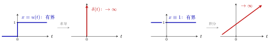
图 15 左：微分器把一个有界的阶跃变成无穷大的冲激。右：积分器把一个有界的常数 \(1\) 越积越大，没有上限。
▸ 思考题。 连续的微分器不稳定，但离散的微分器（差分 \(y[n]=x[n]-x[n-1]\)）是稳定的，想一想为什么。
可跳过
解答：设 \(|x[n]|\lt{}M\)，则 \(|y[n]|\le|x[n]|+|x[n-1]|\lt{}2M\)，被 \(2M\) 夹住，所以稳定。连续微分器不稳定，是因为连续信号可以在一瞬间跳变（跳变处导数无穷大）；离散信号每个点都是有限的数，相邻两点相减，差不会无穷大。
8 综合习题：教材第 33 页习题 1-16¶
做教材第 33 页习题 1-16，把五个性质综合起来用：
| 系统 | 线性 | 时不变 | 无记忆 | 因果 | 稳定 |
|---|---|---|---|---|---|
| \(y(t)=e^{x(t)}\) | \(\times\) | \(\checkmark\) | \(\checkmark\) | \(\checkmark\) | \(\checkmark\) |
| \(y[n]=x[n]\,x[n-1]\) | \(\times\) | \(\checkmark\) | \(\times\) | \(\checkmark\) | \(\checkmark\) |
| \(y(t)=\dfrac{\mathrm{d}x(t)}{\mathrm{d}t}\) | \(\checkmark\) | \(\checkmark\) | \(\times\) | \(\checkmark\) | \(\times\) |
（\(\checkmark\) 表示「是」，\(\times\) 表示「否」。）
8.1 第一行 \(y(t)=e^{x(t)}\)¶
-
线性否：看上去「每项有 \(x\)、\(x\) 一次」，但 \(e^{x}=1+x+\tfrac{x^2}{2!}+\cdots\) 不是一次；
-
时不变是：\(t\) 只在 \(x\) 括号里，括号里只是 \(t\)；
-
无记忆是：\(y(t)\) 只依赖 \(x(t)\)；
-
因果是：无记忆系统一定因果；
-
稳定是：前面例 1 证过。
8.2 第二行 \(y[n]=x[n]\,x[n-1]\)¶
-
线性否：两个 \(x\) 相乘，\(x\) 不是一次；
-
时不变是：\(n\) 只在 \(x\) 括号里，括号里是 \(n\) 和 \(n-1\)（只平移）。
-
无记忆否：\(y[n]\) 还跟 \(x[n-1]\) 有关；
-
因果是：\(x\) 括号里是 \(n\) 和 \(n-1\)，都不大于 \(y\) 括号里的 \(n\)；
-
稳定是：\(|x[n]x[n-1]|\le M\cdot M\)，被 \(M^2\) 夹住。
8.3 第三行 微分器 \(y(t)=\dfrac{\mathrm{d}x(t)}{\mathrm{d}t}\)¶
-
线性是，时不变是：前面都证明过（时不变的证明见例 3）。
-
无记忆否：要算 \(\dfrac{\mathrm{d}x}{\mathrm{d}t}\)，必须知道 \(t\pm\Delta t\) 那么一小点地方的值；
-
稳定否：前面讲过，微分器不稳定；
-
因果：争议最大的一格，见下。
▸ 微分器是因果的吗？ 这一格有争议：写因果或非因果都有依据，按导数的两种等价算法可判为因果。理由是导数是一个极限，可以有两种算法：
| 算法 | 式子 | 按因果的定义 |
|---|---|---|
| 取 \(t\) 右边一点点 | \(\displaystyle\lim_{\Delta t\to0^+}\dfrac{x(t+\Delta t)-x(t)}{\Delta t}\) | 用到了 \(t+\Delta t\gt{}t\) 的值，非因果 |
| 取 \(t\) 左边一点点 | \(\displaystyle\lim_{\Delta t\to0^+}\dfrac{x(t)-x(t-\Delta t)}{\Delta t}\) | 用到的 \(t-\Delta t\lt{}t\)，因果 |
推理：把 \(y(t)\) 写成 \(\dfrac{\mathrm{d}x(t)}{\mathrm{d}t}\) 本身就有一个假设：左极限和右极限相等（导数存在）。既然如此，虽然右边那个算法是非因果的，也能用底下这个因果的算法算出来，所以按这个角度它是因果的。
可跳过
直观理解：导数是「变化有多快」。要知道 \(t\) 这一刻变化多快，既可以「看一眼刚才到现在涨了多少」（只用过去，因果），也可以「偷看一眼马上要涨多少」（用了未来，非因果）。导数存在时两种看法算出的数相同，因此可判为因果。
8.4 小测验¶
小测验：五分钟做五道题，逐格判断。
练习方法：盖住 \(\checkmark/\times\)，对每个系统逐格判断，用各节的判据：线性看「每项有 \(x\)、一次」；时不变看「\(t\) 只在括号里、只是 \(t\)」；无记忆看「两个括号里的数一样」；因果看「\(x\) 括号里的数恒不大于 \(y\) 括号里的」；稳定看「能不能用 \(M\) 夹住」。